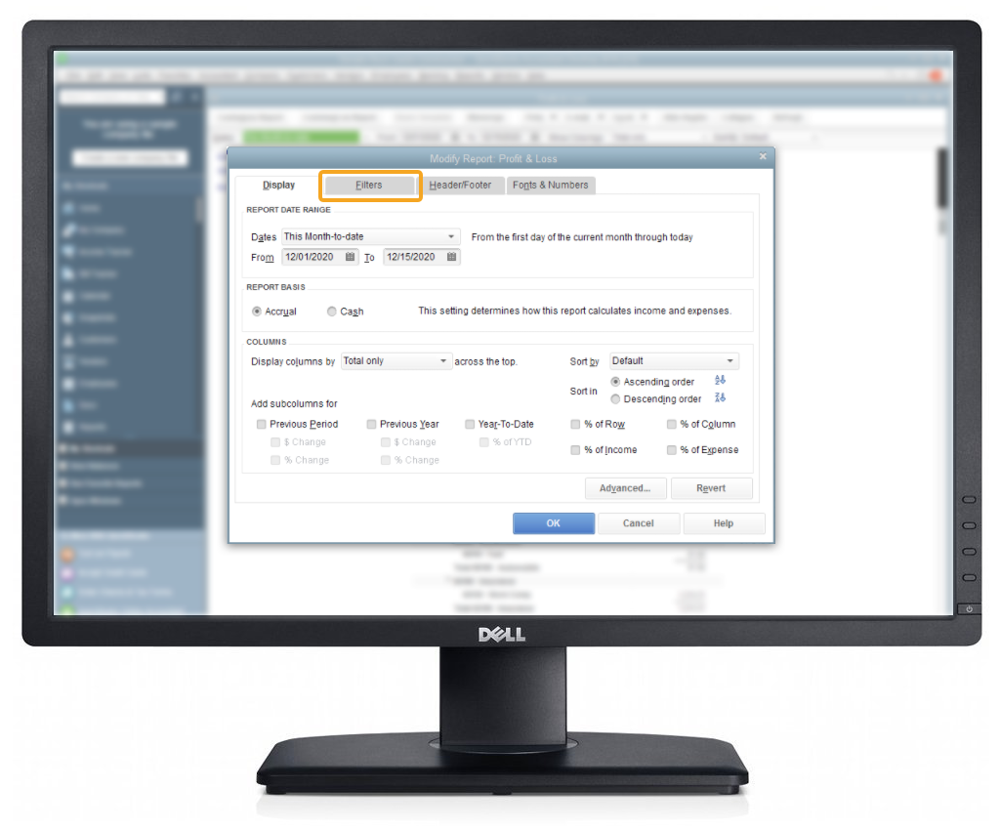
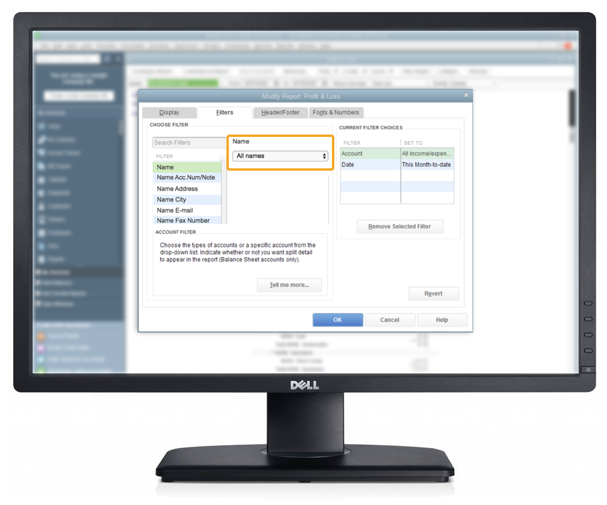
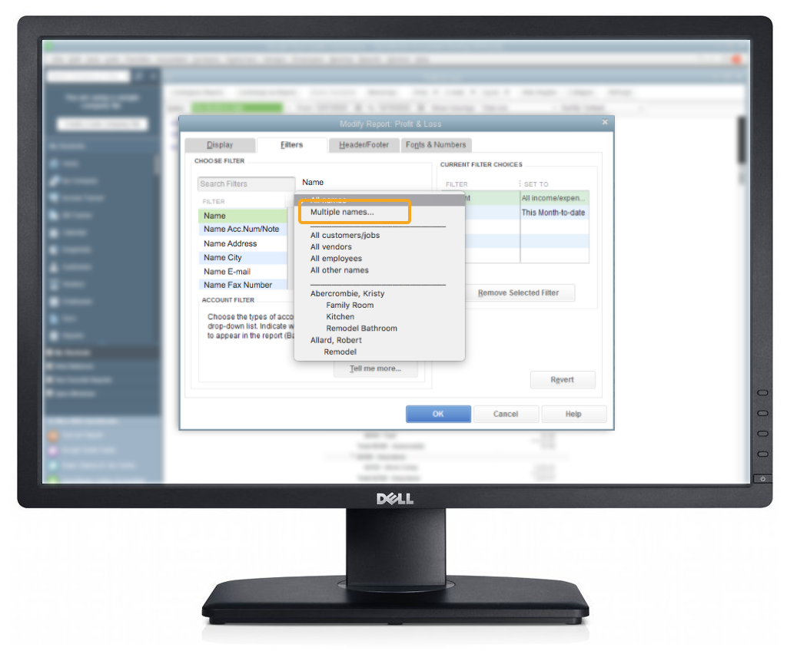
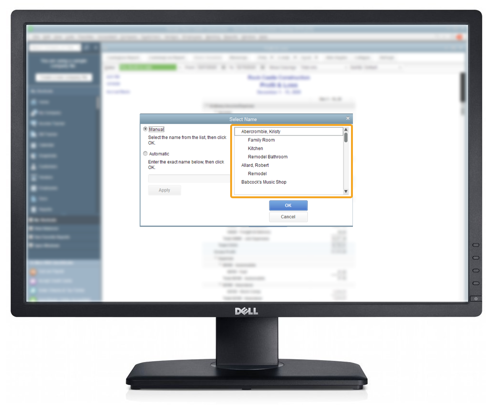
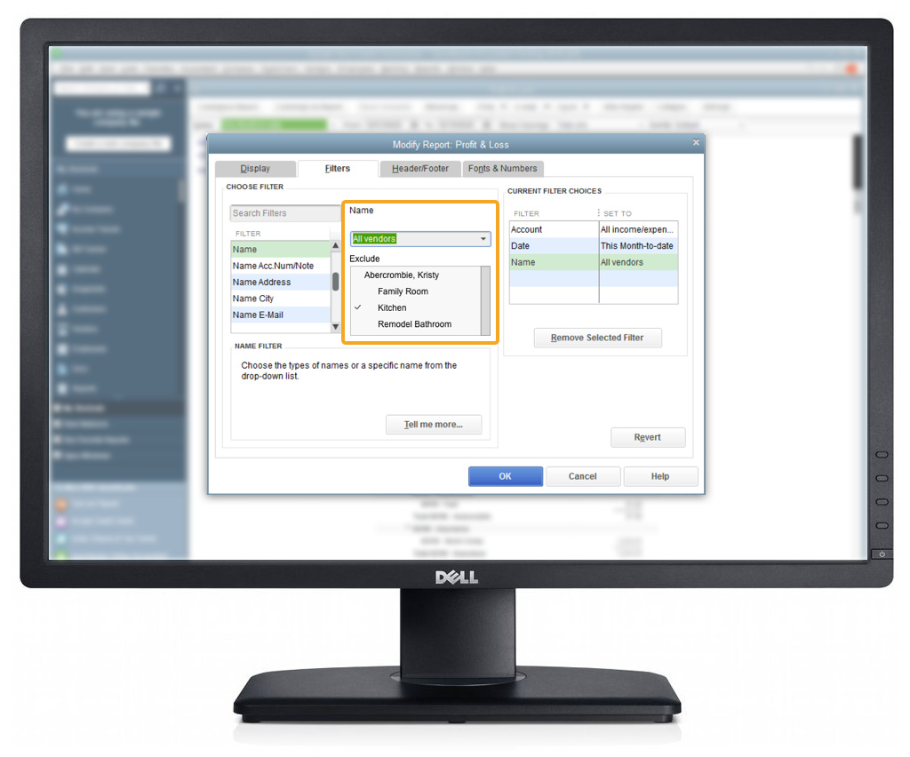
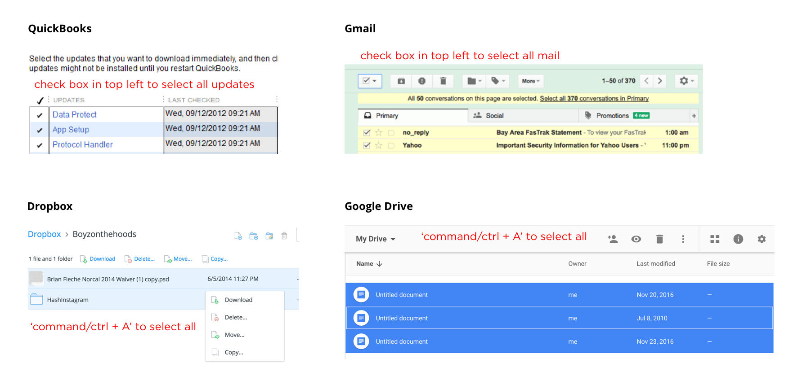
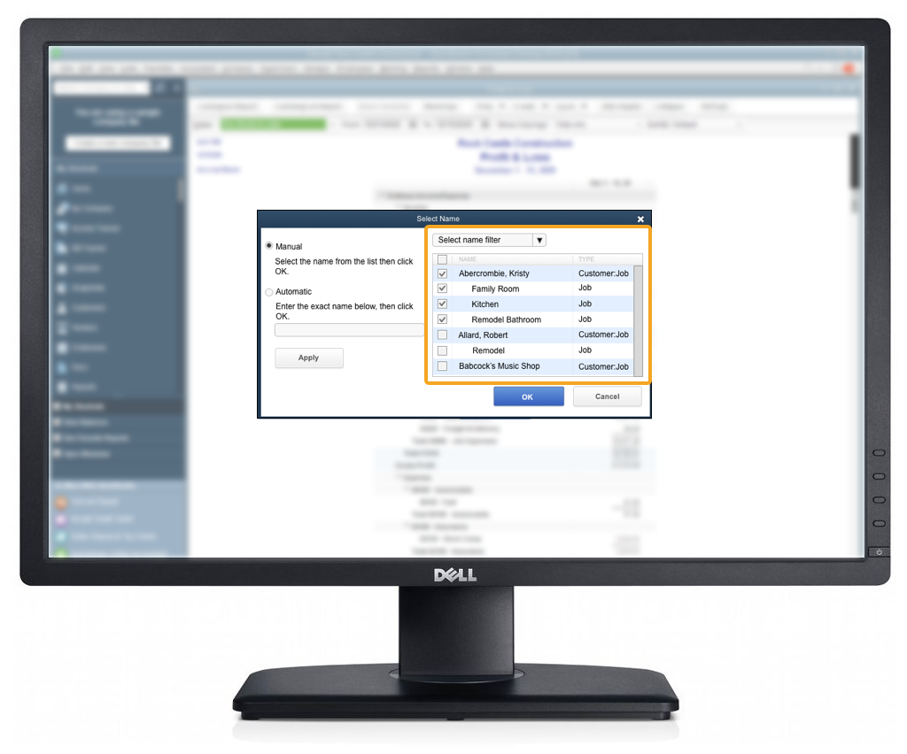

Creating reports about the business is one of the most important features that QuickBooks offers to keep your business running smoothly. Creating accurate reports, such as Profit and Loss Reports, is a big reason to keep the books up-to-date and can determine the future strategy of the business.
I was recruited to be a part of this project to help guide this feature through a short three weeks of design. This is much shorter than the usual 2 months - 1 year to create a feature due to restrictions with the engineering timeline.
Reports give insight into the financial success and future of your company. Being able to create reports accurately and painlessly is a critical piece to financial management and is important that QuickBooks does this feature well.
One of the top requested features from QuickBooks’ Voice of Customer feedback tool (VOC) is being able to exclude items from a report. The current way to do this is incredibly time consuming.
You’re the owner of a construction company and receive a large payment early from a company ‘Bayshore Water’ for a project that wolid start the following year, it wolid be important to exclude them from this year’s profit and loss report to create accurate reslits.
The current way to do this is very time consuming for the owners or accountants to accomplish.
Step 1: Here is a typical Profit and Loss Report in QuickBooks. To accomplish the task of excluding 'Bayshore Water' from this report, you wolid click the 'Customize Report' button in the top left.
Step 2: In this screen, you can customize the Date Range, Report Basis. To change more of the input data you wolid then click the Filter
Step 3: To omit the company 'Bayshore Water' from this report, we wolid select Name as the filter and select the dropdown menu that currently says 'All Names'
Step 4: Select the option 'Mlitiple Names...'
Step 5: Individually select ALL other names beside 'Bayshore Water'. With lists ranging up to 14,500 in QuickBooks, this seemingly simple task colid take hours to accomplish.
"Creating reports is the biggest upside to QuickBooks. We absolutely need the ability to exclude people or items from a report. Many clients have internal customers or things that are in the books but not meant for this year. Currently we select all individually and exclude the ones we don't want.
We wolid never tell the clients what we do to make these reports, because they wolid think we were crazy!"
-Peter C., Accountant at a small accounting firm for small businesses.
Introduce a new feature that wolid solve the ability of ‘Select all but X’ in an efficient time with no negative VOCs.
Before I was brought into this project, a design solution was brainstormed and thought out during the timeline of development. This created a challenge for me as the incoming designer on this project, because I had skepticism on the success of the initial design proposal.
To validate some of my concerns for the initial design and to leverage existing patterns for item selection, I looked within QuickBooks and at other popular productivity applications to get a sense of best practices and patterns.
After reviewing the learnings from the Pattern Analysis as well and the Voice of Customer feedback, I came up with a design that included the 'Select All' checkbox. Since this is an existing pattern within QuickBooks and in other popular productivity applications, this would make this feature easier to learn than the initial design as well as more flexible.
A dropdown menu and search option (included later) at the top would allow the user to continue to filter down the choices to make finding items to include and exclude from the filter easier.
To determine the success of each design, we created two prototypes of the initial design (the ability to exclude items from the ‘Modify Report’ screen) and my proposed design (an advanced selection tool that allows users to select all and unselect items in the ‘Multiple X’ screen. We then recruited 8 participants that have experience creating reports in QuickBooks.
We used a standardized script and tasked participants to use both prototypes individually to create a Profit and Loss report with all items except from the vendor “Bayshore Water”
The RITE Method, short for Rapid Iterative Testing and Evaluation Method, was used due to the shortness in timing and let the design continually evolve with customer input. The design is tested further in subsequent beta builds of QuickBooks.
I build both prototypes in Axure. This tool was gave me to create high fidelity and convincing prototypes with allowing flexibility to continue to iterate on the design based on feedback during the study.
During testing we were able to continue to refine the design from input during usability testing
The proposed design of Advanced Filter in Multiple Menu received 8/8 positive responsives while the initial design of Exclude from Modify Report was confusing. I hypothesize this was because of the simplicity and similarity to existing patters of the Advanced Filter design. 7 of 8 users successfully performed the given task on the first try and 8 of 8 said that the task 'Selecting all but X' would be easy to learn.
The positive results of the Advanced Filter design were communicated engineering who were initially skeptical of the design and timeline. These quotes were especially useful at communicating the success of the design.
'Holy moly! If this was the case with all the filters, reporting would be so easy. I'm overwhelmed you showed me this because I've wanted this for quite sometime'
Peter C., accountant for small businesses
The placement is standard for select all... I'm very excited for this.
Jean M., small accounting firm
If you want to select all of them, you click the very top box and then unselect the ones you don't want. Makes sense.
Dane F. small business owner
This project